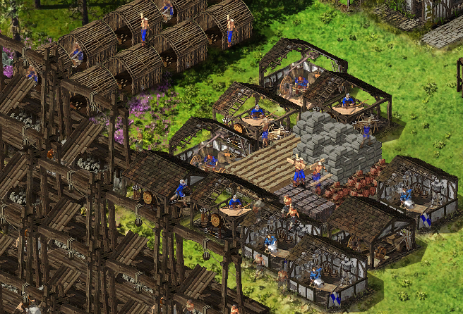

Badania przemysłu pozwalają nam zwiększyć produkcje dóbr w naszej wiosce. Dowiedzie się niedługo od czego powinniśmy zacząć!
Początki przemysłu
Przyrost
Wszystkie zasoby stopniowo ulegają powiększeniu produkcji. Wygląda ono nastepująco :
20% , 40%, 60%, 80%, 100%, 150%, 200% - dla drewna, kamienia, żelaza i smoły.
Wszystko zależy od stylu gry, chcesz walczyć, czy farmić zdobywając honor?
Patrząc na czas trwania serwerów europejskich, jeśli jesteśmy bez floty powinniśmy jak najszybciej obrać ścieżkę militarną. Serwer polski jest już ponad 2500dni! Jeśli osoba gra od samego początku powinna mieć ukończone wszystkie badania. Dla porównania serwery Europejskie ok. 300-400max dni.
Jeśli nie posiadamy eurek raczej nie zdążymy wybadać mniej ważnych elementów.
Warto zaznaczyć, że im bliżej siedziby znajduje się budynek, który produkuje daną rzecz, tym więcej jego wyprodukuje. Z dobrami luksusowymi jest inaczej - im bliżej składu zapasu tym większa produkcja.

Ułożenie
Tak wygląda najlepsze ułożenie na początek.
W co iść na początku?
Na początku najlepiej zrobić wszystkie badania na podstawowe jednostki - kamień i drewno. Jest to podstawa do stawiania budynków w wiosce. Kolejny budynek kosztuje nas więcej surowców.
Do czego służy żelazo?
Żelazo służy do produkcji zbroji i stawiania wilczych dołów w zamku. Jeśli posiadamy w nadmiarze i tylko się kurzy, warto sprzedać w gminie.
Do czego służy smoła?
Smoła to najlepszy sposób na obronę Twojego zamku! Gracze opracowali zamki, które potrafią wytrzymać nawet 10 dobrze oddanych ataków. Koszt postawienia kociołka stanowi- 200szt. Z kartami na zasięg smoły 2x potrafi zdziałać cuda!
Co wybrać w późniejszym etapie?
W dalszym etapie gry warto zastanowić się nad ucztami. Honor zdobyty przez nie umożliwi nam ustawienie większej ilości wiosek. Więcej wiosek oznacza większą ilosć złota i pkt. wiary, które omówimy w dalszych etapach.
Ile honoru jesteśmy w stanie uzyskać?
Możemy uzyskać z jednej uczty ( maksymalna ilość dóbr luksusowych) Ponad 4miliony honoru! Przy użyciu karty 1.2, możemy uzyskać ponad 5mln!
Jakie wady istnieją w ucztach?
Wioski produkujące dobra luksusowe, mają to do siebie, że nie mamy złoży żelaza. Musimy osobno wysyłać kupcami do wioski, w innym wypadku nie odbędzie się produkcja zbroji.
Jakie badania odpuścić + tutorial ataków
Warto odpuścić badania takie jak wzrost produkcji :
- dziczyzny
-krzeseł
-metalurgii
-ubrań
Dlatego, że możemy produkować na każdym rodzaju wiosek, więc nie bedzie nam potrzebne produkować ich więcej.